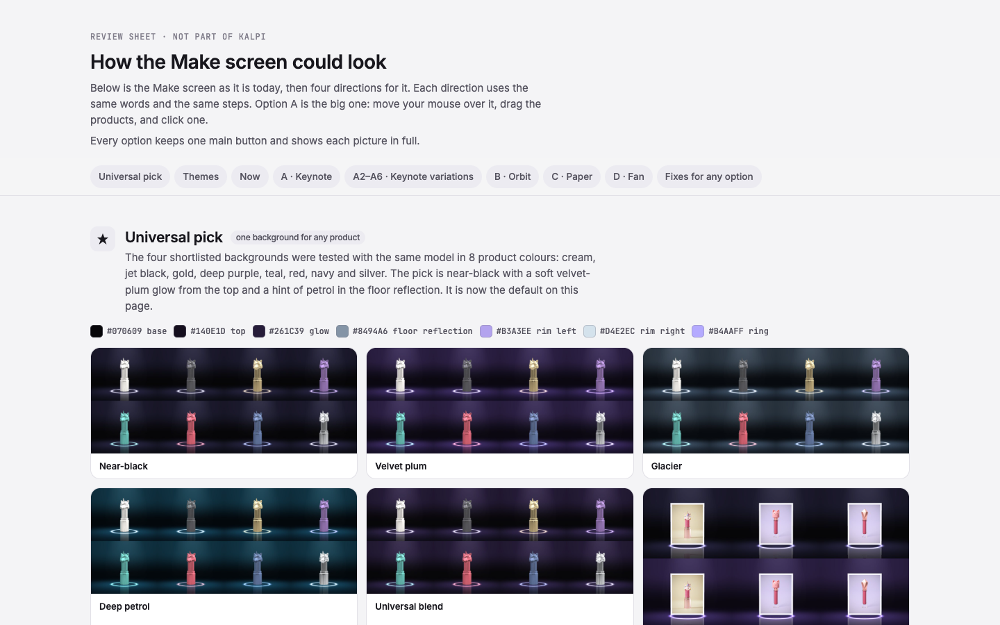
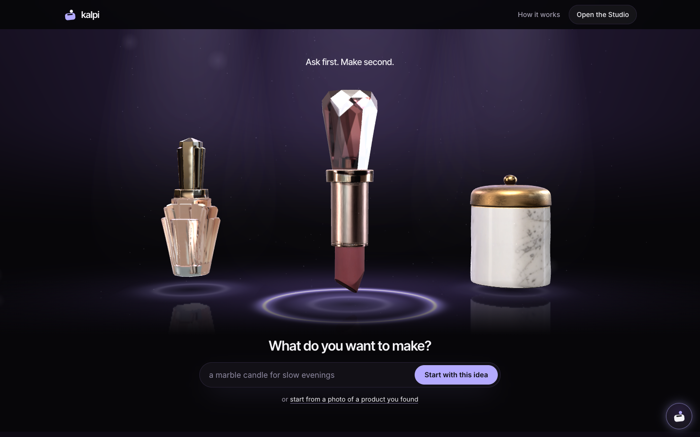
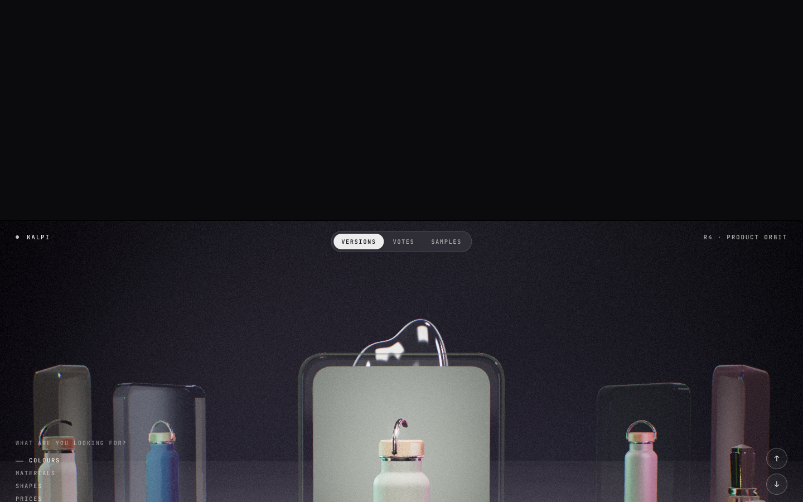
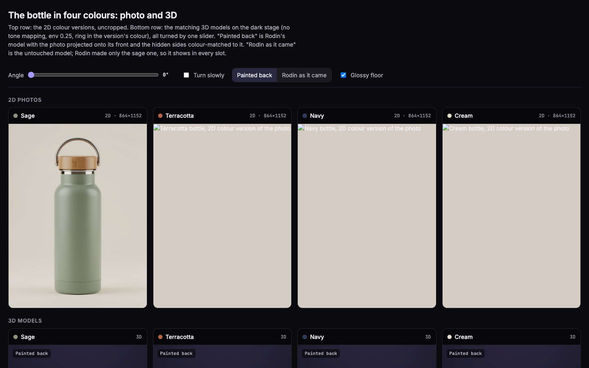
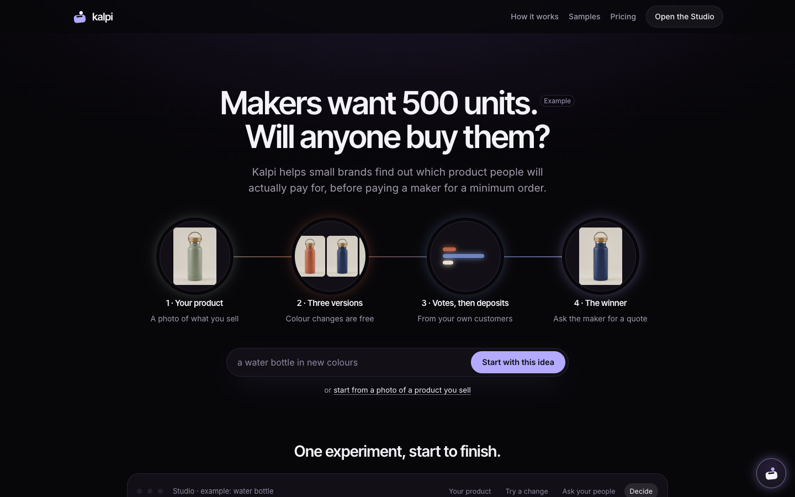
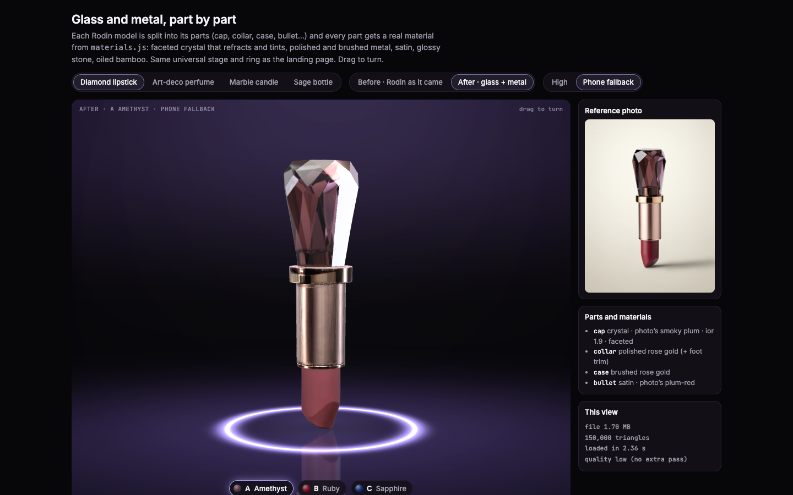
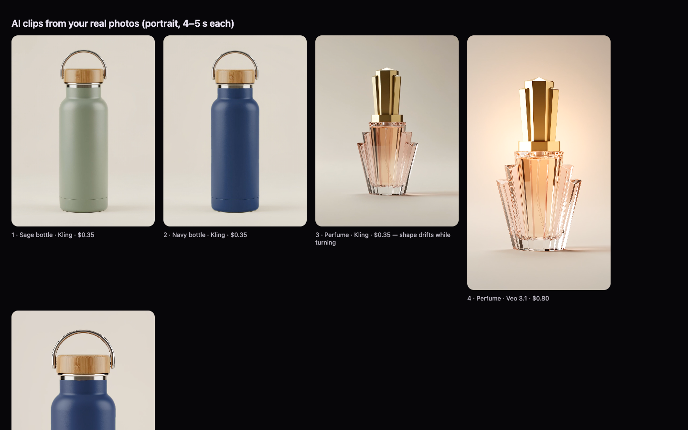
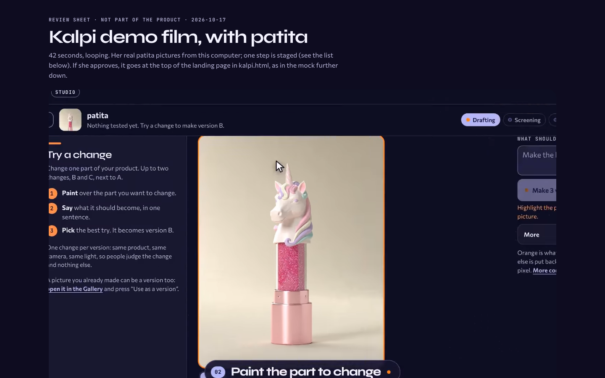

The designs Ioanna chose, 23 Oct 2026. Click a card to open the page (needs the local Kalpi server).

Loves this design — but with the bottles or the red crystal lipstick instead of the unicorn lipstick.

The red crystal lipstick photo becomes a 3D lipstick you can drag, then Amethyst, Ruby and Sapphire versions.
The Studio / Make section of the same page.

Versions orbit the product with vote counts; Colours, Materials, Shapes, Prices tabs.

Sage, terracotta, navy, cream: photos above matching 3D models, one slider turns all four.

Ask first. Make second.

Bottle and lipstick in glass and metal, drag to rotate freely.

AI clips from your real photos, portrait, 4–5 s each.
Bottle versions A Terracotta, B Navy, C Cream with a vote card: “Same bottle, warm terracotta coat. 41 sample votes. Test it →”

The Kalpi demo film, with Patita.